| HOME
Hull Lofting Tutorial: |
| Start: 0 Set the first dxf: 1 Paste other dxf's: 2 Loft profiles: 3 Loft test: 4 Loft Better: 5 Shelling: 6 Full Length: 7 Keel, Mirror & Render: 8 |
| Background: |
| The ship lines were created by Dr Allen Magnuson in Feb 2005 using Vacanti Prolines LE. The data was exported in 2D dxf format, then traced in TurboCad Pro 8.2. Hull is based on the proportions of Noah's Ark according to Genesis 6:15. Tutorial by Tim Lovett Feb 05. |
STEP 1: Set the first dxf in 3d
1. Import the Body lines
Turbocad will open the 2d dxf file directly into 3d space. Simply File > Open > {body.dxf}
Open Design Director (F3 or View/Design Director) shows that Vacanti's dxf generator placed every line on a different level. This will be handy later on.
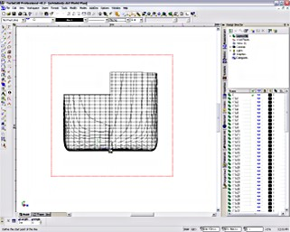
2. XYZ orientation
It's logical to make the X axis longitudinal, Z axis vertical, and Y axis defined by right hand coord system. Like this;
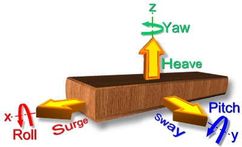
Since Turbocad starts in the XY plane, it is best to begin with {Plan.dxf}. (You could force something else, but why bother?)
The dxf happens to land on my page with the X axis pointing towards the stern. That's probably a good thing because as we increase in X coordinate we are working towards higher station numbers. This should work OK.
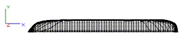
Now spin the thing in 3D (drag with middle button of your 3 button scroll mouse). If you don't have a 3 button scroll mouse then... go away!
Now that you have come back with a new mouse, you'll be happy to know Turbocad's zoom works nicely with scroll - it always centers the zoom at the cursor position which turns out to be the quickest way to dynamically pan, zoom & spin than I know of - and all with just 1 finger.
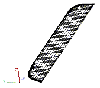
3. Group and Mirror
To mirror the thing, you must use SNAP. TurboCad has a funny button called "No Snap", which means you press it to turn snap OFF. Don't press it. You can't anyway - at least not until you specify what sort of snapping you want...
Better make sure you have the Snap Modes toolbar on first. View > Toolbars... > Check "Snap Modes" > OK
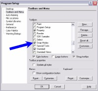
We want to snap to the nearest point, so on the Snap Toolbar, press the "Nearest on Graphic" icon. (Or whatever you feel is appropriate)
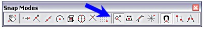
OK, it's mirror time...
- Make sure you are in top (default view); View > Camera > Top
- Select all the geometry with a select window. (Select button is the mouse arrow icon). It should all turn purple.
- Group the whole thing so it is easy to work with. Format > Create Group
- Press "Mirror Copy" button; (Or Edit > Copy Entities > Mirror)
- Pick two points that represent the mirror line - this can be anywhere on the hull center-line (zoom up !). You should have the whole hull now
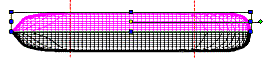
4. Check Scale
We had better check the size of the ship before going too far. We will dimension the overall length or some other known dimension.
- Start in top view (alt+up). Zoom up on the front.
- Change snap mode to Intersection - it's safer.
- Press Orthogonal dimension button. (on Drawing Tools toolbar)
- Click 2 points and read the dimension. The scroll button zoom/pan comes in handy here.
Well we get 5542.4695 for the length. What are the units?
Options > Drawing Setup > Space Units.
It is in inches - so that's 461.8 ft, or 140.8m. Yes, we have the right scale.
Station measurement. Measuring from station 1 to station 60, we get 5360.799" (136.164m or 298 cubits at 18" length). There are actually 59 spacings, so each space is 1/59th, or 90.861" (about 7.6 feet). The spacing is important, we will need that 90.861" number.
5. Check position along X axis
I want to position the hull so that Station 1 is at X=0. To check this, first zoom up on the bow - where the first station 1 is. When you try to click the station line, the WHOLE side is lit up.
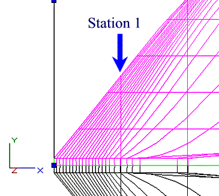
Ungroup this side. Format > Explode. Now you can select Station 1 line. Oh dear, look at Pos X - we are out by 11.6174". The plan lines need to come back to the left by this amount.
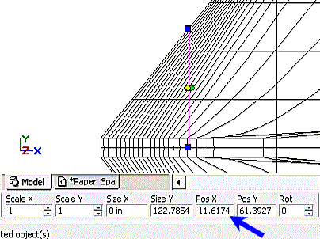
Undo to get back to grouped geometry, then select everything. Now we have Pos X = 2692.0201" (which is the middle). Subtracting the 11.6174 error, leaves 2680.4027". Just type this into the Pos X textbox.
(If you like, you could Explode again and click the Station 1 line to show Pos X = 0)
5. Save it as new drawing
- Save it with a new name. File > Save As... > "Ship.tcw" or something
- Spin it to check (Middle button drag)
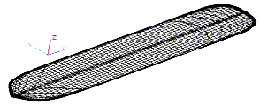
The nice thing is that Vacanti has given all the lines in appropriate layers and layer names. There are 94 layers listed here, the current layer is called "0" and all layers are visible. Click the visible icon to see which line is which layer.
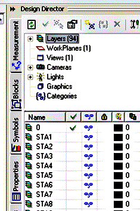
6. Workplanes
NAME IT. It would be a good idea to label the current (default) XY workplane in Design Director (DD). Click on WorkPlanes(0) in DD, then Right Button (RB) in the first table cell > Create New > type "plan_lines". No need to change any position and orientation data. Give it a tick (check) to make it active.
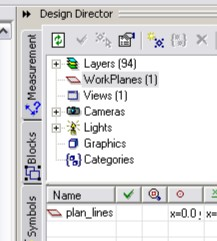
WORKPLANE SIZE: To display the workplane, use the menu; Workspace > Display WorkPlane. You should see the (red) workplane like the image below. If your workplane is a silly size you can zoom to extents first (View > Zoom > Extents) and then fit the workplane to this (Workspace > Workplane > Fit To Window).
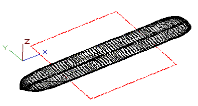
|
Tim Lovett © 2005 | All Rights Reserved| http://www.worldwideflood.com |